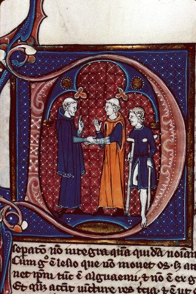

| LEGENDE TEMPLIERE DE SALIVAL |
| Enluminure représentant des moines soignant un malade | TABLE DES MATIÈRES |
|  |
0) l'ordre du temple 1) Le trésor des templiers 2) Qui a pu avoir connaissance du trésor ? a) Les acteurs principauxb) Les Salm et les Bar c) Salm, Bar et templiers d) Les evêques de Metz 3) Salival, le 629ième site où est caché le trésor des templiers ? a) des templiers non loin de Salival b) Salival, un refuge pour les templiers ? (l'étoile des templiers, le panier de roses ) c) Les Salm ont-ils pu apporter le trésor à salival ? |